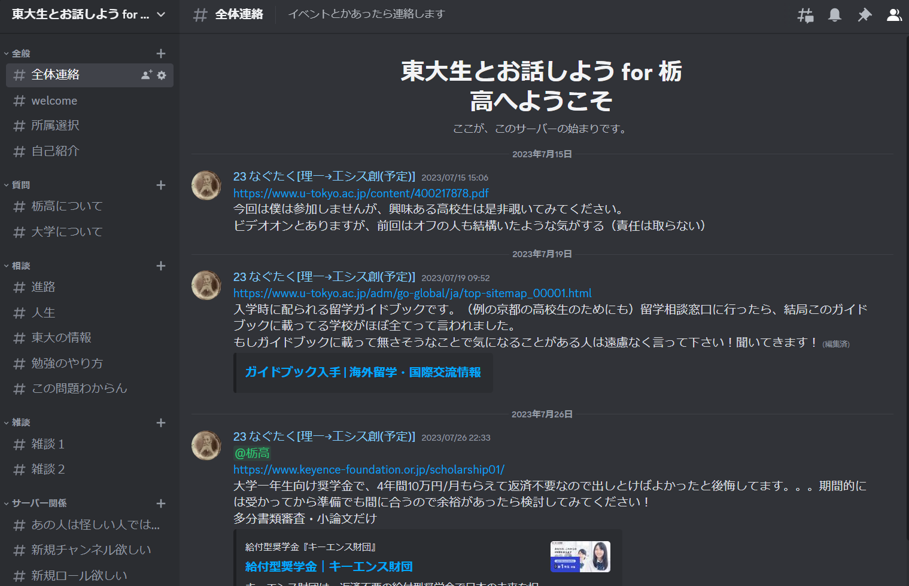

Discordのアカウントを作る
ここをクリックしてサーバーに参加（アカウント作成直後は正常に参加できないことがあります）
ウェルカムメッセージに従ってロール選択（部活とか）と表示名を変更
以下のようにロールで所属が分かるようにしてます

自己紹介はやりたかったらする できたらしてほしい
運営が承認してくれるのを待つ
@確認済みになると全てのチャンネルが見えるようになります
2023-09-13
このページは、Discordサーバー「東大生とお話しよう for 栃高」のエントランスページです。
基本何をしてもOK！栃高生なら誰でも参加OK！東大生をもっと身近に感じて欲しい〜！
大学のリアルを解像度高く得られる（かもしれない）し、おもろい情報が流れてくる（かもしれない）し、受験のモチベ維持になる（かもしれない）し、色んな人と知り合える（かもしれない）！
新しくチャンネルを作ってほしい等の要望があれば遠慮なく@adminまたは@editorに連絡してください。

Discordのアカウントを作る
ここをクリックしてサーバーに参加（アカウント作成直後は正常に参加できないことがあります）
ウェルカムメッセージに従ってロール選択（部活とか）と表示名を変更
以下のようにロールで所属が分かるようにしてます
自己紹介はやりたかったらする できたらしてほしい
運営が承認してくれるのを待つ
@確認済みになると全てのチャンネルが見えるようになります
あるイベントで京都の高校３年生と出会い、後日その高校出身の友達を経由して連絡が来て、それがきっかけで東大の留学や研究室の情報を調べてあげていた。ネットでもある程度の情報は手に入るが、学内の方が調べやすい情報も多いのだ。
私は高校のときに情報が無さすぎて困ったため、今の私のような先輩が居たら良かったなーと思い、またこの先私と同じように困る人が少なくなるようにと思ってこのサーバーを立ち上げた。有名進学校に情報やコネ（健全な意味の）が偏っている現状が少しでも改善されることを願う。
@mentionでしか通知が飛ばないようになってます。#全体連絡します。このサーバーには@adminと@editorという二つの運営ロールがあります。その名の通り@adminはほぼ全ての権限を持ち、@editorはチャンネルやロールの新規追加/編集の権限のみを持ちます。
運営側も常に人員を募集しています！興味があれば@adminに連絡してください。
ここまで読んでくれてありがとう。少しでも興味を持ったら一歩踏み出してみよう！
All life is an experiment. The more experiments you make the better.― Ralph Waldo Emerson